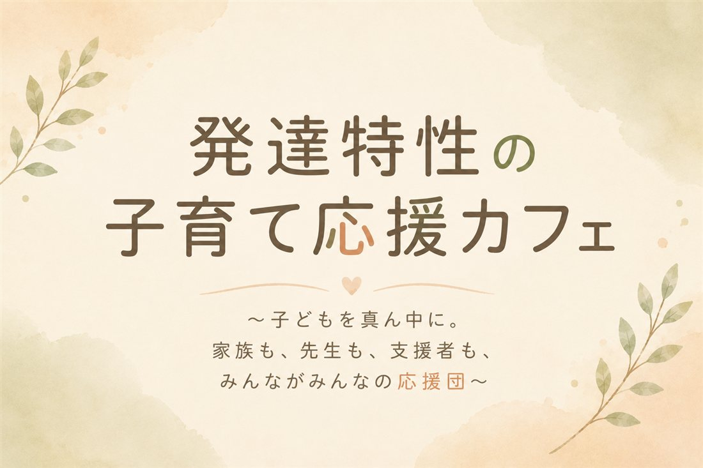
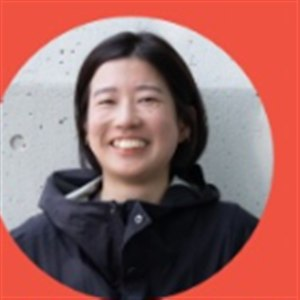
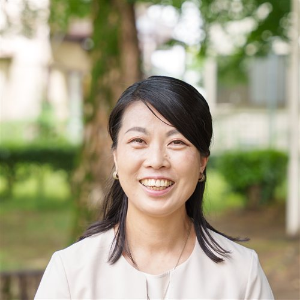

発達障害当事者の声から、子どもの気持ちと関わり方を考える時間。
子どもの気持ちも、親の想いも、先生や支援者の立場も。それぞれに見えているものは、少しずつ違います。
「どうして伝わらないんだろう」——そう感じている、子どもだけに見えている世界があります。
毎日いちばん近くで見ているからこそ、気づけることと、気づけないことがあります。
集団の中で見える姿は、家庭で見せる姿とはまた違う一面かもしれません。
完全に分かり合うことは、難しいかもしれません。けれど「自分には見えていない部分があるかもしれない」と気づくことから、伝え合う方法を一緒に考えることができます。
13:30〜
当事者自身の体験から、子どもの頃に見えていた世界をお話しします。一般的な対処法だけでは見えにくい、行動の裏にあるリアルな感覚や本質に耳を傾ける時間に。

14:00〜
お話を聞いて感じたことを共有しながら、子どもの気持ちやそれぞれの立場について考える時間です。
14:30〜
子どもの特性や関わり方を、家庭・学校・支援者で共有するためのツール「サポートブック」をご紹介し、実際に作るための第一歩のきっかけとしていただける時間に。

発達障害当事者 / 発達障害コミュニケーションアドバイザー
発達障害当事者の立場から、気軽に立ち寄れる地域交流会を主催。「これって私だけ？」を安心して語り合える場をつくっています。また、当事者目線での日々の気づきを伝える音声配信も展開。自身のリアルな視点と専門知識から、子どもが見ている世界を届けています。
発達っ子ママキャリアメンター
発達っ子ママキャリアメンターとして、発達特性のある子どもを育てる保護者のキャリアと子育ての両立を応援しています。サポートブックを通じて、家庭・学校・支援者をつなぐ活動にも力を入れています。
親から学校へのお願いごとをまとめるものではなく、見えない部分をお互いに共有するためのコミュニケーションツールとして、サポートブックをご紹介します。
興味を持った方には、後日「サポートブック作成講座」もご案内します。